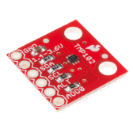

Le capteur TMP102: Low-Power Digital Temperature Sensor With SMBus™ and Two-Wire Serial Pages.
- Présentation
- Schéma interne du composant
- Adressage
- Registres
- Documentation: pdf
- Distributeur: Go Tronic
Le capteur TMP102 mesure la température avec une précision de 0,5°C de -40°C à 125°C et communique l'information via une interface I²C.


Modules TMP102
| SparkFun |
|  |
| Documentation - Schéma |
Les cartes Netduino
Secret Labs
- Microcontrôleur : STM32F405RG 32 bits à architecture Cortex-M4 cadencé à 168 MHz.
- RAM : 100 KB (164+)*.
- Flash : 384 KB (1408KB)*.
- Port Ethernet : 10Mbps (Wifi:802.11b/g/n)*.
- E/S numériques : 22
- Entrées analogiques : 6
- Stockage: carte µSD
- IDE : Microsoft Visual Studio
- Framework : .NETMF 4.3
- Langages de programmation : C#, VB
 |
 |
| Netduino + 2 | Netduino 3 wifi* (compatible Gadgeteer) |
- Sites à consulter : Netduino, NETMF
- Distributeurs : Mouser Electronics
Les cartes FEZ
GHI Electonics (Extrait)
- Microcontrôleur : 180 MHz 32-bit ARM Cortex-M4.(120 MHz 32-bit ARM Cortex-M3 )*
- SoC(SoM)* : G80 G120*
- RAM : 156 KB(2.87 MB)*.
- Flash : 256 KB (13.67 MB)*.
- E/S numériques : 53(60)*
- Entrées analogiques : 16(8)*
- Réseaux : Ethernet TCP/IP, WiFi, and SSL.
- Stockage: carte µSD
- IDE : Microsoft Visual Studio
- Framework : .NETMF 4.3
- Langages de programmation : C#, VB
 |
 |
| PANDA III | COBRA III* (compatible Gadgeteer) |
- Sites à consulter : GHI ELECTRONICS, NETMF
- Distributeurs : Mouser Electronics
Wiki
- Des exemples de code pour les cartes Netduino et FEZ sont disponibles
sur Wikispaces: lien
Contenu du répertoire proposé au téléchargement
Le répertoire proposé au téléchargement (au format zip ou tar.gz) contient la solution NetduinoTMP102 composée :
- Du projet TMP102 : le code source de la classe TMP102.
- Du projet TestNetduinoTMP102 : un exemple d'utilisation de cette classe.
Remarques : La dernière version compilée de la classe TMP102 se situe dans la bibliothèque MicroToolsKit disponible sur nuget.org.

Installer cette bibliothèque dans le projet simplifie l'utilisation de cette classe.
Description et utilisation de la classe TMP102
- Rôle: Contrôler un capteur de température TMP102 via un bus I²C.
- Assembly: MicroToolsKit (disponible sur nuget.org)
- Espace de noms: Microtoolskit.Hardware.Sensors
Création d'un projet avec l'IDE Visual Studio
- Utiliser le gestionnaire de paquets NuGet pour ajouter l'assembly MicroToolsKit (disponible sur nuget.org) dans le répertoire Références du projet.(clic droit sur Références dans le gestionnaire de solutions de Visual Studio puis Gérer les packages NuGet...)
- Ajouter l'espace de noms Microtoolskit.Hardware.Sensors dans l'en-tête du fichier source.
- Créer un objet en utilisant le constructeur TMP102 et les paramètres appropriés.
- Initialiser le circuit avec la méthode Init et les paramètres appropriés.
- Utiliser la méthode ReadAsCelcius pour déclencher une mesure de température et obtenir le résultat en °C.
Constructeurs
| Syntaxe | Description | |
 |
TMP102(ADD0 pin, UInt16 Frequency ) | Instancie un objet "TMP102". pin : égal à ADD0.GND => Addresse SLA sur le bus I²C = 0x48. (par défaut) Frequency: >Féquence du signal SCL = 100kHz. (par défaut) |
Enumérations
| Syntaxe | Description | |
 |
ADD0 |
Si la broche ADD0 est connecté à :
|
|
AlertPolarity |
AlertPolarity permet de régler l'état actif de la broche ALERT.
|
|
ConsecutiveFaults |
Une erreur se produit lorsque la température dépasse les limites fixées par l'utilisateur dans les registres THIGH et TLOW. ConsecutiveFaults active la broche ALERT si un, deux, quatre ou six dépassements se sont produits.
|
|
ConversionRate |
Fréquence de conversion
|
|
Registers |
Sélection des registres du TMP102
|
|
ThermostatMode |
|
Méthodes
| Syntaxe | Description | |
|
bool Init(ADD0 addressSelect) | Initialisation le composant avec: |
|
bool Init( [ ADD0 addressSelect = ADD0.Gnd], [ bool oneShotMode = false], [ AlertPolarity alertPolarity = AlertPolarity.activeHight], [ ConversionRate conversionRate = ConversionRate.four_Hz], [ ThermostatMode thermostatMode = ThermostatMode.ComparatorMode]) |
Initialisation le composant avec: |
|
float ReadAsCelcius() | Renvoi la valeur de la température en °C. |
|
float ReadAsFarenheit() | Renvoi la valeur de la température en °F. |
|
float ReadAsKelvin() | Renvoi la valeur de la température en K. |
|
float ReadAsRankine() | Renvoi la valeur de la température en R. |